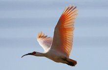

朱鹮非繁殖期通体白色，头、羽冠、背和两翅及尾缀有粉红色。翅下和尾下亦缀有粉红色，飞翔时极明显可见。最外侧飞羽几全暗褐色，仅基部的内外缘以及羽干白色。第二枚内翈沿羽干中央部分以及羽端暗褐，第三枚仅先端沾染一些暗褐色，其余飞羽全白色。头后枕部羽毛延长成矛状，形成松散的羽冠。繁殖期头、上背和颈缀有灰色，两翅粉红色较浅淡，第1-5枚初级飞羽具灰褐色端斑。
成鸟全身羽色以白色为基调，但上下体的羽干以及飞羽略沾淡淡的粉红色，尤以初级飞羽的粉红色较浓，头颈部的羽毛特化伸长形成下垂的冠羽，整个面部，包括额部、眼周、眼睑和下嘴基部裸露无羽毛，且呈鲜艳的红色，喙的尖端和下喙的基部红色其他部分黑色，虹膜金黄色，脚亦为鲜亮的红色。繁殖季节的成鸟在整个头部和颈部乃至肩部会分泌出黑色的小颗粒，将头颈肩部沾染成灰黑色，但必须指出这种颜色的变化是由分泌物造成的而非羽毛本身颜色的变化。
虹膜橙红色，嘴黑色，嘴基及头裸露部分朱红色，跗蹠、爪及胫下部裸露部分亦为朱红色。幼鸟两颊被有绒羽，其余脸部裸露无羽，橙黄色。体羽缀有烟灰色而具玫瑰色光泽。初级飞羽黑褐色，脚淡褐色，虹膜淡黄褐色。
大小量度：体重♂1700-1885g，♀1465g；体长♂783-790mm，♀679mm；嘴峰♂182-183mm，♀137-150mm；翅♂380-450mm，♀375-380mm；尾♂180-188mm，♀16-165mm；跗蹠♂85-90mm，♀75-77mm。（注：♂雄性；♀雌性）